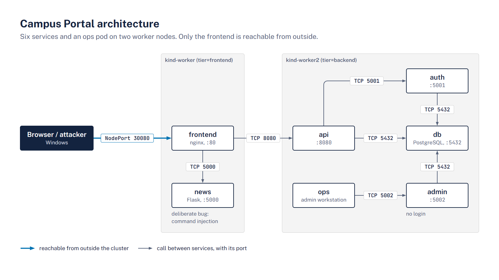

Chapter 6. Deploy the portal
By the end of this chapter the Campus Portal runs on your cluster, with seven pods spread over the two worker nodes. A script confirms that real students can still log in and read their grades, and you'll log in as Sara yourself from the browser on Windows. Plan on two to three hours. Most of that time goes into reading one long file, k8s/app.yaml, because every later chapter refers back to it.
Step 1. Check that the cluster is still running
The cluster you built in chapter 4 has to be up before you can put anything on it. After Windows restarts it sometimes isn't, and one command tells you.
Open the Ubuntu terminal.
kubectl get nodes -L tierkubectl get nodes lists the cluster's nodes. -L tier adds a column that shows each node's tier label, which is the label that decides where your pods may run.
You should see three nodes.
NAME STATUS ROLES AGE VERSION TIER
kind-control-plane Ready control-plane 5m14s v1.36.4
kind-worker Ready <none> 5m v1.36.4 frontend
kind-worker2 Ready <none> 5m v1.36.4 backendEvery line must say Ready in the STATUS column. In the TIER column, kind-worker must say frontend and kind-worker2 must say backend, while kind-control-plane has no tier and stays empty. The AGE column shows how long ago you built the cluster, so yours will differ.
If you see this instead
The connection to the server 127.0.0.1:37645 was refused - did you specify the right host or port?The three node containers aren't running. That happens after Windows restarts or after Ubuntu was shut down, and the port number on your screen will be different. Start the nodes again with docker start kind-control-plane kind-worker kind-worker2, wait one minute, then run kubectl get nodes -L tier again.
A node says NotReady. Cilium hasn't come up on that node yet. Run cilium status --wait, which waits until every Cilium part reports OK, and then check the nodes again.
The TIER column is empty for kind-worker or kind-worker2. The cluster was created without the labels from kind-config.yaml, and every pod in this chapter would then wait forever with nowhere to go. Add the labels by hand with kubectl label node kind-worker tier=frontend and then kubectl label node kind-worker2 tier=backend.
Step 2. Write k8s/app.yaml
k8s/app.yaml is a manifest, a text file that describes the objects you want to exist, and Kubernetes keeps working until what runs in the cluster matches the file. It describes the whole portal in 14 objects: one Secret, six Services and seven Deployments.
The file is written in YAML, a text format where indentation shows what belongs to what. Each level is indented by two spaces, and tabs aren't allowed at all, since a single tab anywhere breaks the whole file. A line that starts with - is one item of a list. In this file a list's items sit at the same indentation as the key above them, as in ports: followed by - port: 5000, and that is correct. A line holding only --- ends one object and starts the next, which is how one file can hold 14 of them.
In the Ubuntu terminal, make the folder and open a new empty file in VS Code.
mkdir -p ~/microseg/k8s
code ~/microseg/k8s/app.yamlmkdir -p ~/microseg/k8s creates the k8s folder inside your project, and -p keeps it quiet if the folder is already there. code opens the file in VS Code, which creates it the first time you save.
You should see VS Code open an empty tab named app.yaml, and no output in the terminal. Paste the file below into it and save with Ctrl+S. Check that the VS Code status bar at the bottom right shows LF, as in chapter 2.
# Campus Portal. Order: Secret, then all Services, then all Deployments.
# Services come first so every pod gets the *_SERVICE_PORT env vars (used in attack step 2).
apiVersion: v1
kind: Secret
metadata:
name: db-credentials
namespace: campus
type: Opaque
stringData:
POSTGRES_USER: postgres
POSTGRES_PASSWORD: postgres # vendor default ON PURPOSE (attack step 3)
POSTGRES_DB: campus
---
apiVersion: v1
kind: Service
metadata:
name: frontend
namespace: campus
spec:
type: NodePort
externalTrafficPolicy: Local # keep the client IP, so Cilium sees it as "world"
selector:
app: frontend
ports:
- port: 80
targetPort: 80
nodePort: 30080
---
apiVersion: v1
kind: Service
metadata:
name: news
namespace: campus
spec:
selector:
app: news
ports:
- port: 5000
targetPort: 5000
---
apiVersion: v1
kind: Service
metadata:
name: api
namespace: campus
spec:
selector:
app: api
ports:
- port: 8080
targetPort: 8080
---
apiVersion: v1
kind: Service
metadata:
name: auth
namespace: campus
spec:
selector:
app: auth
ports:
- port: 5001
targetPort: 5001
---
apiVersion: v1
kind: Service
metadata:
name: db
namespace: campus
spec:
selector:
app: db
ports:
- port: 5432
targetPort: 5432
---
apiVersion: v1
kind: Service
metadata:
name: admin
namespace: campus
spec:
selector:
app: admin
ports:
- port: 5002
targetPort: 5002
---
apiVersion: apps/v1
kind: Deployment
metadata:
name: frontend
namespace: campus
spec:
replicas: 1
selector:
matchLabels:
app: frontend
template:
metadata:
labels:
app: frontend
spec:
nodeSelector:
tier: frontend
containers:
- name: frontend
image: nginx:1.28
ports:
- containerPort: 80
readinessProbe:
httpGet:
path: /healthz
port: 80
volumeMounts:
- name: files
mountPath: /etc/nginx/conf.d/default.conf
subPath: default.conf
- name: files
mountPath: /usr/share/nginx/html/index.html
subPath: index.html
volumes:
- name: files
configMap:
name: frontend-files
---
apiVersion: apps/v1
kind: Deployment
metadata:
name: news
namespace: campus
spec:
replicas: 1
selector:
matchLabels:
app: news
template:
metadata:
labels:
app: news
spec:
nodeSelector:
tier: frontend
automountServiceAccountToken: false # the attacker gets no Kubernetes API token
containers:
- name: news
image: campus-news:1.0
imagePullPolicy: Never
command: ["gunicorn", "--bind", "0.0.0.0:5000", "--workers", "2", "news:app"]
ports:
- containerPort: 5000
readinessProbe:
httpGet:
path: /healthz
port: 5000
---
apiVersion: apps/v1
kind: Deployment
metadata:
name: api
namespace: campus
spec:
replicas: 1
selector:
matchLabels:
app: api
template:
metadata:
labels:
app: api
spec:
nodeSelector:
tier: backend
containers:
- name: api
image: campus-app:1.0
imagePullPolicy: Never
command: ["gunicorn", "--bind", "0.0.0.0:8080", "--workers", "2", "api:app"]
envFrom:
- secretRef:
name: db-credentials
ports:
- containerPort: 8080
readinessProbe:
httpGet:
path: /healthz
port: 8080
---
apiVersion: apps/v1
kind: Deployment
metadata:
name: auth
namespace: campus
spec:
replicas: 1
selector:
matchLabels:
app: auth
template:
metadata:
labels:
app: auth
spec:
nodeSelector:
tier: backend
containers:
- name: auth
image: campus-app:1.0
imagePullPolicy: Never
command: ["gunicorn", "--bind", "0.0.0.0:5001", "--workers", "2", "auth:app"]
envFrom:
- secretRef:
name: db-credentials
ports:
- containerPort: 5001
readinessProbe:
httpGet:
path: /healthz
port: 5001
---
apiVersion: apps/v1
kind: Deployment
metadata:
name: db
namespace: campus
spec:
replicas: 1
selector:
matchLabels:
app: db
template:
metadata:
labels:
app: db
spec:
nodeSelector:
tier: backend
containers:
- name: db
image: postgres:17
envFrom:
- secretRef:
name: db-credentials
ports:
- containerPort: 5432
readinessProbe:
exec:
command: ["pg_isready", "-h", "127.0.0.1", "-U", "postgres"]
volumeMounts:
- name: init
mountPath: /docker-entrypoint-initdb.d
volumes:
- name: init
configMap:
name: db-init
---
apiVersion: apps/v1
kind: Deployment
metadata:
name: admin
namespace: campus
spec:
replicas: 1
selector:
matchLabels:
app: admin
template:
metadata:
labels:
app: admin
spec:
nodeSelector:
tier: backend
containers:
- name: admin
image: campus-app:1.0
imagePullPolicy: Never
command: ["gunicorn", "--bind", "0.0.0.0:5002", "--workers", "2", "admin:app"]
envFrom:
- secretRef:
name: db-credentials
ports:
- containerPort: 5002
readinessProbe:
httpGet:
path: /healthz
port: 5002
---
apiVersion: apps/v1
kind: Deployment
metadata:
name: ops
namespace: campus
spec:
replicas: 1
selector:
matchLabels:
app: ops
template:
metadata:
labels:
app: ops
spec:
nodeSelector:
tier: backend
terminationGracePeriodSeconds: 1 # sleep ignores the stop signal, don't wait 30 s
containers:
- name: ops
image: campus-app:1.0
imagePullPolicy: Never
command: ["sleep", "infinity"]The rest of this step walks through the file one object at a time. Keep the file open beside you.
The Secret
A Secret is a Kubernetes object for passwords and keys. Pods can read its values as environment variables without the password being written into every Deployment.
stringData:
POSTGRES_USER: postgres
POSTGRES_PASSWORD: postgres # vendor default ON PURPOSE (attack step 3)
POSTGRES_DB: campus(1) Under stringData you write the values as plain text. Kubernetes shows them base64-encoded, an encoding anyone can reverse, and by default keeps them unencrypted in its database, so a Secret keeps a password out of your other files and offers no encryption at all.
(2) The three names are the ones the official postgres:17 image reads when it starts for the first time. It creates the user postgres with the password postgres and an empty database called campus.
(3) The password is the vendor default on purpose. In chapter 8 the attacker guesses it in step 3. The news pod never receives this Secret, so the attacker has to guess.
The Services
A Service gives a group of pods one stable name and address. Without one, every caller would need to know the pod's current IP address, and that changes each time the pod is replaced. Five of the six Services look the same apart from the name and the port, so read the news Service once and the other four follow.
spec:
selector:
app: news
ports:
- port: 5000
targetPort: 5000(1) No type line means the default type, ClusterIP, a virtual address that exists only inside the cluster. Nothing on Windows or in WSL can reach it directly.
(2) selector: app: news picks the pods this Service sends traffic to, which is every pod in the namespace carrying the label app: news. Each of your pods has exactly one label of that form, and the policies in chapter 10 select pods with the same label.
(3) port is the port callers connect to on the Service, and targetPort is the port the program inside the pod listens on. Here both are 5000, so nothing gets translated.
The frontend Service is different, because it's the one door into the portal from outside.
spec:
type: NodePort
externalTrafficPolicy: Local # keep the client IP, so Cilium sees it as "world"
selector:
app: frontend
ports:
- port: 80
targetPort: 80
nodePort: 30080(1) type: NodePort also opens port 30080 on the nodes. In chapter 4, kind-config.yaml mapped port 30080 of the kind-worker container to 127.0.0.1:30080 on your laptop, so http://localhost:30080 reaches nginx in the frontend pod from both WSL and Windows.
(2) externalTrafficPolicy: Local tells Kubernetes to deliver outside requests only to a frontend pod on the node where they arrived, and to leave the address they came from in place. Without it, Kubernetes replaces the caller's address with the node's own address on every outside request, even when the pod is on the same node, and Cilium would see the node instead of world. With it, Cilium can tell that the request came from outside the cluster and gives it the identity world, which is the name the frontend policy in chapter 10 allows.
There is no Service for ops. Ops only ever calls admin and nothing calls ops, so it doesn't need a Service name.
The Deployments
A Deployment tells Kubernetes how many copies of a pod to keep running and what each copy looks like. One running copy is called a replica, and every Deployment here asks for one. If the pod dies, the Deployment starts a new one with a new name and a new IP address.
The frontend Deployment shows the parts every Deployment has.
spec:
replicas: 1
selector:
matchLabels:
app: frontend
template:
metadata:
labels:
app: frontend
spec:
nodeSelector:
tier: frontend(1) template is the pattern for each pod, and template.metadata.labels is the label every pod made from it gets. selector.matchLabels must hold the same label, because that's how the Deployment recognizes its own pods. If the two differ, kubectl apply refuses the Deployment.
(2) nodeSelector: tier: frontend allows the pod only onto a node with the label tier=frontend, which is kind-worker. This is placement only. A node label decides where a pod runs, while a pod label decides who the pod is to a policy.
Frontend runs the stock nginx:1.28 image and gets its two files from the ConfigMap frontend-files, which deploy.sh creates from your frontend/ folder. A ConfigMap is a Kubernetes object that holds ordinary files or settings so that pods can read them.
volumeMounts:
- name: files
mountPath: /etc/nginx/conf.d/default.conf
subPath: default.conf
- name: files
mountPath: /usr/share/nginx/html/index.html
subPath: index.html
volumes:
- name: files
configMap:
name: frontend-files(1) A volume is storage that Kubernetes attaches to a pod. volumes at the bottom declares one volume called files whose contents are the ConfigMap.
(2) Each volumeMounts entry places something from that volume at a path inside the container. subPath picks one file out of the ConfigMap, so only that file is replaced and the rest of nginx's folders stay as the image left them. The first mount puts your default.conf where nginx looks for its settings, and the second puts your index.html where nginx looks for its web page.
Every Deployment except ops also has a readiness probe. The kubelet is the Kubernetes agent on every node that starts containers there. A readiness probe is a check the kubelet runs on the pod every 10 seconds, and until it passes, kubectl shows the pod as 0/1 and Services send it no traffic. Frontend's probe asks nginx for /healthz. These probes come from the node itself, and chapter 10's first policy file names them in a rule of their own.
The news Deployment adds three lines worth reading.
nodeSelector:
tier: frontend
automountServiceAccountToken: false # the attacker gets no Kubernetes API token
containers:
- name: news
image: campus-news:1.0
imagePullPolicy: Never
command: ["gunicorn", "--bind", "0.0.0.0:5000", "--workers", "2", "news:app"](1) News sits on kind-worker next to frontend, because both face the public. The two tiers only decide placement and how Figure 3 in step 6 is drawn. They don't stop any traffic.
(2) Kubernetes normally gives every pod a service account token, a password the pod can use to talk to the Kubernetes API. automountServiceAccountToken: false leaves it out, so an attacker who takes over news finds no token to steal and can't ask Kubernetes to change anything.
(3) imagePullPolicy: Never tells the kubelet to use only an image that's already on the node and never to download one. Your two images exist only on your laptop. With the default policy, a missing image would make the kubelet try Docker Hub, the public image library, where an image called campus-news either doesn't exist or belongs to a stranger. With Never, a missing image fails at once with a clear error, which you'll meet in the failures below. The stock images nginx:1.28 and postgres:17 have no such line, and they use the copies that setup.sh loaded onto the nodes in chapter 4.
(4) command replaces the image's start command. Gunicorn is a program that runs a Python web app and handles many requests at once. --bind 0.0.0.0:5000 makes it listen on port 5000 on every network interface of the pod, --workers 2 runs two copies of the app, and news:app means the variable app inside news.py.
The api, auth and admin Deployments follow the news pattern on the backend tier, each with its own port and module. They also read the Secret.
envFrom:
- secretRef:
name: db-credentialsenvFrom turns every key in the Secret db-credentials into an environment variable, so the Python code can read os.environ["POSTGRES_PASSWORD"]. News has no envFrom, because news never talks to the database.
The db Deployment runs the stock postgres:17 image.
readinessProbe:
exec:
command: ["pg_isready", "-h", "127.0.0.1", "-U", "postgres"]
volumeMounts:
- name: init
mountPath: /docker-entrypoint-initdb.d
volumes:
- name: init
configMap:
name: db-init(1) An exec probe runs a command inside the container and counts exit code 0 as ready. pg_isready asks PostgreSQL whether it accepts connections. While the database loads its first data it only accepts connections from inside its own container through a local file, not over the network, so this check over 127.0.0.1 passes only once loading has finished.
(2) The postgres image runs every .sql file it finds in /docker-entrypoint-initdb.d the first time it starts with an empty data folder. Mounting the ConfigMap db-init there runs your db/init.sql, which creates the tables and the four students.
(3) There's no volume for the data itself. The data lives inside the container and disappears when the pod is replaced. Chapter 8 relies on that: restarting the db Deployment puts Omar's grade back to 58.
The ops Deployment is the smallest.
terminationGracePeriodSeconds: 1 # sleep ignores the stop signal, don't wait 30 s
containers:
- name: ops
image: campus-app:1.0
imagePullPolicy: Never
command: ["sleep", "infinity"]sleep infinity keeps the container alive while doing nothing. Ops stands for the IT team's maintenance machine, and you run commands inside it with kubectl exec. When Kubernetes stops a pod it first asks politely and waits 30 seconds before forcing it. sleep runs as the container's first process and has no handler for the polite request, so Linux never delivers it. terminationGracePeriodSeconds: 1 cuts the wait to one second, and deploy.sh doesn't hang each time it deletes the namespace.
Step 3. Check the file before you deploy
A paste that lost one space shifts a line to the wrong level, and you'd rather find that now than after a five-minute build. A dry run sends the file through kubectl's checks without creating anything.
cd ~/microseg && kubectl apply --dry-run=client -f k8s/app.yamlkubectl apply -f k8s/app.yaml would create every object in the file. --dry-run=client makes kubectl read and check the file on your side and print what it would do, while changing nothing in the cluster.
You should see 14 lines, one per object, each ending in created (dry run).
The order is the order of the file, the Secret first, then the six Services, then the seven Deployments. If you've deployed before, the lines end in unchanged (dry run) or configured (dry run) instead. That's fine too, as long as no line says error.
If you see this instead
error: error parsing k8s/app.yaml: error converting YAML to JSON: yaml: line 12: found character that cannot start any tokenThere's a tab on the line it names, or near it. In a file with several objects, kubectl may count the line from the --- above the object, so look in the object that starts above that line, and expect the number on your screen to differ from this example. Tabs look like spaces on screen. Chapter 2 set VS Code to draw spaces as faint dots and tabs as small arrows, so look for an arrow on that line. If you see no dots at all, open Settings, search for render whitespace and set it to all again. Replace the tab with spaces and save.
error: error parsing k8s/app.yaml: error converting YAML to JSON: yaml: line 9: mapping values are not allowed in this contextA line is indented by the wrong number of spaces, so YAML reads it as part of the line above. The line number points at or right below the problem, counted the same way as above. Compare the indentation of that part with the file in this guide, two spaces per level, and remember that a list item starting with - lines up with the key above it.
Step 4. Write deploy.sh
Deploying takes 14 commands in a fixed order, and you'll repeat it every time you want a clean start. deploy.sh holds them so you never type them by hand.
Open a new file in VS Code.
code ~/microseg/deploy.shYou should see VS Code open an empty tab named deploy.sh. Paste the script below, save it and check for LF in the status bar again.
#!/bin/bash
# Build, load and (re)deploy the app. Deletes namespace campus first, so the DB is reset
# and all policies are gone (flat network). Run: bash ~/microseg/deploy.sh
set -e
cd ~/microseg
docker build -t campus-app:1.0 apps/
docker build -t campus-news:1.0 -f apps/Dockerfile.news apps/
mkdir -p images
docker image save --platform linux/amd64 --output images/campus-app.tar campus-app:1.0
docker image save --platform linux/amd64 --output images/campus-news.tar campus-news:1.0
kind load image-archive images/campus-app.tar
kind load image-archive images/campus-news.tar
kubectl delete namespace campus --ignore-not-found
kubectl create namespace campus
kubectl -n campus create configmap frontend-files --from-file=frontend/
kubectl -n campus create configmap db-init --from-file=db/init.sql
kubectl apply -f k8s/app.yaml
kubectl -n campus wait --for=condition=Available deployment --all --timeout=180s
kubectl -n campus get pods -o wide#!/bin/bash names the program that runs the file. You always start it with bash deploy.sh, so for you it's a label more than a command. The two comment lines say what the script does.
set -e stops the script at the first command that fails. Without it a failed image build would be followed by a deploy of the old image, and you'd be testing something other than what you wrote.
cd ~/microseg moves into the project folder, so every path after it works no matter where you started the script from.
docker build -t campus-app:1.0 apps/ builds the image from apps/Dockerfile, the way you did by hand in chapter 5. -t gives the image its name and tag, and apps/ is the folder Docker may copy files from. The second build uses -f apps/Dockerfile.news to pick the other Dockerfile. It has to come second, since the news image starts from campus-app:1.0.
mkdir -p images makes the images folder, and -p keeps it quiet when the folder already exists. Your .gitignore from chapter 2 keeps this folder out of Git, because the files in it are large.
docker image save --platform linux/amd64 --output images/campus-app.tar campus-app:1.0 writes the image into one file, called an image archive. --platform linux/amd64 keeps only the copy for your laptop's kind of processor. Docker 29 stores each image with extra pieces next to it, which shows in the build output as exporting attestation manifest, and kind's shortcut for copying an image straight out of Docker trips over them. Saving one plain copy to a file and loading the file avoids that.
kind load image-archive images/campus-app.tar copies the image into every node. Each node is a separate container with its own image store, so your nodes can't see the images in your laptop's Docker until they're loaded this way.
kubectl delete namespace campus --ignore-not-found deletes the campus namespace and everything inside it, including the database and any policies. That's how every run of deploy.sh gives you a fresh flat network with Omar's grade back at 58. --ignore-not-found keeps the first run, when there's nothing to delete, from failing. On later runs this line can take half a minute while the old pods stop.
kubectl create namespace campus makes the namespace again, empty.
kubectl -n campus create configmap frontend-files --from-file=frontend/ makes the ConfigMap that frontend mounts. Given a folder, --from-file adds one entry per file, named after the file, so the ConfigMap gets default.conf and index.html. The next line makes db-init from db/init.sql the same way.
kubectl apply -f k8s/app.yaml creates the 14 objects in the order they appear in the file. The Services come before the Deployments for a reason. When a pod starts, Kubernetes gives it an environment variable such as DB_SERVICE_PORT=5432 for every Service that already exists in its namespace, and a Service created later is missing from that pod's list. Step 2 of the attack reads those variables to find its targets, so this order makes every run of the lab give the same result.
kubectl -n campus wait --for=condition=Available deployment --all --timeout=180s waits until every Deployment has its pod ready, or gives up after 180 seconds. A pod counts as ready once its readiness probe passes. Ops has no probe, so it's ready as soon as it runs.
kubectl -n campus get pods -o wide prints the pods and where they landed.
Step 5. Deploy the portal
Run the script, which takes a few minutes. Most of that goes into the image steps, even though the build reuses the layers from chapter 5.
bash ~/microseg/deploy.shbash runs the script, and the path works from any folder.
You should see Docker's build display, which redraws itself in place and ends with lines starting =>, then the lines below. They're the last 32 lines of the output.
namespace/campus created
configmap/frontend-files created
configmap/db-init created
secret/db-credentials created
service/frontend created
service/news created
service/api created
service/auth created
service/db created
service/admin created
deployment.apps/frontend created
deployment.apps/news created
deployment.apps/api created
deployment.apps/auth created
deployment.apps/db created
deployment.apps/admin created
deployment.apps/ops created
deployment.apps/admin condition met
deployment.apps/api condition met
deployment.apps/auth condition met
deployment.apps/db condition met
deployment.apps/frontend condition met
deployment.apps/news condition met
deployment.apps/ops condition met
NAME READY STATUS RESTARTS AGE IP NODE NOMINATED NODE READINESS GATES
admin-766cddb668-gr2k8 1/1 Running 0 21s 10.244.1.190 kind-worker2 <none> <none>
api-65c5c7d5fd-2qtsk 1/1 Running 0 21s 10.244.1.228 kind-worker2 <none> <none>
auth-7fd575594b-2q5bd 1/1 Running 0 21s 10.244.1.61 kind-worker2 <none> <none>
db-d7c884fbf-9jdvd 1/1 Running 0 21s 10.244.1.111 kind-worker2 <none> <none>
frontend-6d755c977c-rzsg7 1/1 Running 0 21s 10.244.2.64 kind-worker <none> <none>
news-545758c8c6-2jp4n 1/1 Running 0 21s 10.244.2.131 kind-worker <none> <none>
ops-56f8b77f6d-hs2zr 1/1 Running 0 21s 10.244.1.140 kind-worker2 <none> <none>The namespace, the two ConfigMaps and the 14 objects from app.yaml must each say created, 17 lines in all, and all seven Deployments must say condition met. The table at the end must list seven pods, each 1/1 and Running. Pod names end in random letters that change on every run, and your IP addresses will differ too.
If you see this instead
$'\r': command not foundLines ending in this text appear right away, before anything builds. The file has Windows line endings, which bash reads as an extra character at the end of every line. Click CRLF in the VS Code status bar, choose LF, save and run the script again.
ERROR: no nodes found for cluster "kind"There's no cluster to load the images into, usually because it was deleted. Go back to chapter 4 and run bash ~/microseg/setup.sh, then run deploy.sh again.
error: timed out waiting for the condition on deployments/frontendOne pod didn't become ready within 180 seconds. The name at the end tells you which. Look at its status with kubectl -n campus get pods, then find that status in the failure list of step 6.
The script stopped during a docker build line. That's the same build you ran in chapter 5, so the error and its fix are in that chapter's failure list.
Step 6. Look at the pods
The script's table is a snapshot from the moment it finished. Ask for the pods again to confirm they stayed up.
kubectl -n campus get pods-n campus looks inside the campus namespace. Without it kubectl looks in default, which is empty.
You should see seven pods.
NAME READY STATUS RESTARTS AGE
admin-766cddb668-gr2k8 1/1 Running 0 22s
api-65c5c7d5fd-2qtsk 1/1 Running 0 22s
auth-7fd575594b-2q5bd 1/1 Running 0 22s
db-d7c884fbf-9jdvd 1/1 Running 0 22s
frontend-6d755c977c-rzsg7 1/1 Running 0 22s
news-545758c8c6-2jp4n 1/1 Running 0 22s
ops-56f8b77f6d-hs2zr 1/1 Running 0 22sREADY says how many containers in the pod are ready out of how many there are, and it must read 1/1 for all seven. STATUS must read Running. RESTARTS should be 0. A number that keeps growing means trouble: the program inside is crashing and Kubernetes keeps restarting it.
Now look at where each pod runs.
kubectl -n campus get pods -o wide-o wide adds the pod's IP address and its node.
You should see the same seven pods with two more columns that matter.
NAME READY STATUS RESTARTS AGE IP NODE NOMINATED NODE READINESS GATES
admin-766cddb668-gr2k8 1/1 Running 0 22s 10.244.1.190 kind-worker2 <none> <none>
api-65c5c7d5fd-2qtsk 1/1 Running 0 22s 10.244.1.228 kind-worker2 <none> <none>
auth-7fd575594b-2q5bd 1/1 Running 0 22s 10.244.1.61 kind-worker2 <none> <none>
db-d7c884fbf-9jdvd 1/1 Running 0 22s 10.244.1.111 kind-worker2 <none> <none>
frontend-6d755c977c-rzsg7 1/1 Running 0 22s 10.244.2.64 kind-worker <none> <none>
news-545758c8c6-2jp4n 1/1 Running 0 22s 10.244.2.131 kind-worker <none> <none>
ops-56f8b77f6d-hs2zr 1/1 Running 0 22s 10.244.1.140 kind-worker2 <none> <none>In the NODE column, frontend and news must be on kind-worker. Admin, api, auth, db and ops must all be on kind-worker2. The IP addresses on kind-worker start with one prefix and those on kind-worker2 with another, because each node hands out addresses from its own range.


Figure 3 is the same picture drawn as boxes. Notice that the only way in from Windows is port 30080 on kind-worker, which leads to frontend and nowhere else.
If you see this instead
A pod's STATUS column says ErrImageNeverPull. Run kubectl -n campus describe pod followed by that pod's name, and the Events list at the bottom holds a line like this one.
Container image "campus-news:1.0" is not present with pull policy of NeverThe node doesn't have the image, and imagePullPolicy: Never forbids downloading it. This happens when the cluster was rebuilt after the images were loaded, or when the tag in app.yaml doesn't match the tag in deploy.sh. If the cluster was rebuilt, run bash ~/microseg/deploy.sh again, which loads the images and starts over. If the tags differ, make the image: lines in app.yaml read exactly campus-app:1.0 and campus-news:1.0, as the docker build -t lines in deploy.sh do, then run deploy.sh.
A pod stays Pending. Kubernetes found no node it's allowed to use. In kubectl -n campus describe pod followed by the pod's name, the Events list has a FailedScheduling line that includes the following text.
2 node(s) didn't match Pod's node affinity/selectorThe tier labels are missing from your worker nodes. Add them as shown in step 1. The pending pods start within seconds, no redeploy needed.
The frontend pod shows CrashLoopBackOff, or stays at 0/1. Run kubectl -n campus logs deploy/frontend to read what nginx printed. A line such as nginx: [emerg] unknown directive "proxy_pas" in /etc/nginx/conf.d/default.conf:19 means frontend/default.conf has a typo, and the word and the line number name it. Fix the file, then run deploy.sh again, since only deploy.sh rebuilds the ConfigMap from your files.
Step 7. Look at the Services and the environment variables
The Services are what the pods use to find each other, and the attacker uses them too.
kubectl -n campus get svcsvc means services.
You should see six Services.
NAME TYPE CLUSTER-IP EXTERNAL-IP PORT(S) AGE
admin ClusterIP 10.96.110.73 <none> 5002/TCP 22s
api ClusterIP 10.96.122.235 <none> 8080/TCP 22s
auth ClusterIP 10.96.108.176 <none> 5001/TCP 22s
db ClusterIP 10.96.126.23 <none> 5432/TCP 22s
frontend NodePort 10.96.181.104 <none> 80:30080/TCP 22s
news ClusterIP 10.96.176.161 <none> 5000/TCP 22sFive have the TYPE ClusterIP and one port each. Frontend has the TYPE NodePort, and its PORT(S) column reads 80:30080/TCP, meaning port 80 inside the cluster and 30080 on the node. CLUSTER-IP addresses start with 10.96. and the rest differs on your laptop.
Next, look at the variables Kubernetes put into the news pod, the ones the attacker reads in chapter 8.
kubectl -n campus exec deploy/news -- env | grep SERVICE_PORT= | sortkubectl -n campus exec deploy/news -- runs the command that follows inside a pod of the news Deployment. env prints every environment variable of that pod. Back in WSL, grep SERVICE_PORT= keeps the lines that hold a Service's port and sort puts them in alphabetical order.
You should see seven lines.
There's one line for each of the six Services, from ADMIN_SERVICE_PORT=5002 to NEWS_SERVICE_PORT=5000, and one for KUBERNETES_SERVICE_PORT=443, the cluster's own API. If one of your six Services is missing, the Services were created after the pods. Run deploy.sh again, without changing the order of objects in app.yaml.
Last, confirm the network is still flat, with no policies in the namespace.
kubectl -n campus get ciliumnetworkpoliciesYou should see one line.
No resources found in campus namespace.No resources found in campus namespace. means zero policy objects, which is the flat network you'll attack in chapter 8. deploy.sh deleted the namespace, so any policy you may have tried early is gone too.
Step 8. Write check-portal.sh
You need a fast way to prove the portal still works for real users. In chapter 10 you'll add the policies, and a policy that blocks the attacker must not block Sara. This script runs the same six things a real user and the IT team do, and counts how many worked.
Open a new file in VS Code.
code ~/microseg/check-portal.shYou should see VS Code open an empty tab named check-portal.sh. Paste the script below and save it.
#!/bin/bash
# Checks that the portal still works for real users. Run from WSL: bash ~/microseg/check-portal.sh
# Each check prints OK or FAIL. The last line counts the OKs.
PORTAL=http://127.0.0.1:30080
passed=0
check() {
if [ "$2" = "$3" ]; then
echo "OK $1"
passed=$((passed + 1))
else
echo "FAIL $1 (expected '$3', got '$2')"
fi
}
check "portal page loads" "$(curl -s -o /dev/null -w '%{http_code}' --max-time 5 $PORTAL/)" "200"
check "news list has 3 items" "$(curl -s --max-time 5 $PORTAL/news | jq length)" "3"
TOKEN=$(curl -s --max-time 5 -H 'Content-Type: application/json' -d '{"username":"sara","password":"sara2026"}' $PORTAL/api/login | jq -r .token)
check "sara can log in" "${#TOKEN}" "32"
check "sara sees her profile" "$(curl -s --max-time 5 -H "Authorization: Bearer $TOKEN" $PORTAL/api/profile | jq -r .full_name)" "Sara Ahmed"
check "sara sees her 2 grades" "$(curl -s --max-time 5 -H "Authorization: Bearer $TOKEN" $PORTAL/api/grades | jq length)" "2"
check "ops can open the admin panel" "$(kubectl -n campus exec deploy/ops -- curl -s --max-time 5 http://admin:5002/users | jq length)" "4"
echo "PORTAL: $passed/6 OK"(1) PORTAL=http://127.0.0.1:30080 is the NodePort, the same port the browser uses. 127.0.0.1 is the address that always means "this computer", the same as localhost.
(2) check() is a small function that takes three things: a description, the value the portal returned and the value expected. It prints OK when the two match and counts it, or prints FAIL with both values so you can see the difference. Inside the function $1, $2 and $3 are those three things in order, [ "$2" = "$3" ] compares two texts, and $((passed + 1)) adds one to the count.
(3) $(...) runs the command inside it and puts that command's output in its place. Each check line uses it to fetch something from the portal.
(4) The first check asks for the portal page. -o /dev/null throws the page away and -w '%{http_code}' prints only the HTTP status code, which is 200 when the page loaded. --max-time 5 gives up after 5 seconds, so a blocked connection can't hang the script.
(5) The second check fetches /news, which frontend passes on to the news pod. jq length counts the items in the JSON list, and there must be 3.
(6) The TOKEN= line logs in as Sara through /api/login, the same request the portal page sends. -H adds a header saying the body is JSON, and -d sends the username and password as that body, which also makes the request a POST. jq -r .token pulls the token out of the answer. ${#TOKEN} is the length of the token, which is 32 characters when the login worked.
(7) The next two checks send that token in an Authorization header and ask for Sara's profile and grades. Her full name must be Sara Ahmed, and she must have 2 grades.
(8) The last check runs curl inside the ops pod and asks the admin panel for its user list, which must hold 4 users. Nothing outside the cluster can reach admin, so the check goes in through ops, the one pod that is supposed to reach it.
Now run it.
bash ~/microseg/check-portal.shYou should see six lines that start with OK and a count at the end.
OK portal page loads
OK news list has 3 items
OK sara can log in
OK sara sees her profile
OK sara sees her 2 grades
OK ops can open the admin panel
PORTAL: 6/6 OKThe last line must read PORTAL: 6/6 OK. Each of the six descriptions must start with OK.
If you see this instead
FAIL portal page loads (expected '200', got '000')Nothing answered on port 30080. A 000 is what curl prints when it couldn't connect at all. Check that the frontend pod is 1/1 Running. If it is, run docker ps and look at the kind-worker line, whose PORTS column must include 127.0.0.1:30080->30080/tcp. If it doesn't, the cluster was built from a different kind-config.yaml, and you have to rebuild it with the file from chapter 4. If the mapping is there too, run kubectl -n campus get pods -o wide and check that frontend's NODE is kind-worker. If it isn't, fix the tier labels as in step 1 and run deploy.sh again.
FAIL sara can log in (expected '32', got '4')The login answered without a token. jq then printed the word null, which is 4 characters long. Auth found no student sara with that password, which points at the seed data in db/init.sql. Compare your file with chapter 5, then run deploy.sh again so the database is created fresh.
The profile and grades checks fail with got '', and a jq error line sits above them. The api pod answered with an error page instead of JSON. Run kubectl -n campus logs deploy/api, and if that shows nothing useful, kubectl -n campus logs deploy/auth. Python names the problem on the last line of its message. KeyError: 'POSTGRES_DB' means the envFrom lines are missing from that Deployment in app.yaml.
Step 9. Open the portal from Windows

Everything so far ran inside WSL. The attacker in chapter 8 sends his requests from Windows PowerShell, so check that Windows reaches the same port.
Open PowerShell and run this.
curl.exe -s -o NUL -w "%{http_code}\n" http://localhost:30080/curl.exe is the curl program that comes with Windows 11. In Windows PowerShell, curl without .exe runs a different PowerShell command with different options, so always type the .exe. -o NUL throws the page away, since NUL is the Windows name for nowhere. -w "%{http_code}\n" prints the status code, and curl itself turns the \n into a line break so the next prompt starts on a new line.
You should see one number.
It must be 200. localhost works on both sides because WSL passes port 30080 from Ubuntu on to Windows.
Now open Microsoft Edge or Chrome on Windows and go to http://localhost:30080. The page is deliberately plain. Under the heading Campus Portal you see the Announcements list with three items, each with its date: Spring registration is open, Library opens 24/7 during finals and Graduation project fair on 10 December.
Now log in as Sara. Type sara in the username box and sara2026 in the password box, then click Log in. Under the button the page prints Sara's profile and grades as JSON. Her full name is Sara Ahmed and her major is Computer Science. She has two grades, 88 in Cloud Computing and 91 in Network Security. Take a screenshot of the page with the clock visible, because chapter 14 asks for the portal working before the attack. Press Windows+PrtScn, which saves the full screen, taskbar clock included, to the Pictures\Screenshots folder. Rename the file ch08-portal-sara.png.
Leave the image link checker at the bottom of the page alone. In chapter 8 it's how the attacker gets in.
If you see this instead
The page says Login failed under the button. The username or password doesn't match. The password is sara2026, all lowercase, and a password manager may have filled in something else.
The browser says it can't reach the page or that localhost refused to connect, while check-portal.sh passes in WSL. Run the curl.exe command above again. If it prints 000, WSL isn't passing the port on to Windows. Open .wslconfig from PowerShell and check that it still has the line localhostForwarding=true, as in chapter 3.
notepad "$env:USERPROFILE\.wslconfig"If you had to add or fix that line, save the file. Whether you changed it or not, restart WSL so the setting is read again.
wsl --shutdownwsl --shutdown stops Ubuntu and the cluster with it. Open Ubuntu again, go back to step 1 of this chapter to start the nodes, and run the curl.exe command once more.
If you had closed every Ubuntu window, Windows may have stopped Ubuntu and the cluster with it. Open Ubuntu again, wait a minute and check the pods. If kubectl says the connection was refused, start the nodes as in step 1.
The announcements list is empty but login works. The news pod isn't ready. Check it with kubectl -n campus get pods and work through the pod failures in step 6.
Checkpoint
Run the portal check once more and keep only its last line.
bash ~/microseg/check-portal.sh | tail -n 1tail -n 1 prints only the last line of what comes before the |.
It must read exactly PORTAL: 6/6 OK. Together with the pod list earlier, which showed seven pods 1/1 Running with frontend and news on kind-worker, that's this chapter's checkpoint. Don't start chapter 7 until both match.
Save your work in Git.
cd ~/microseg && git add -A && git commit -m "ch06: deploy the portal"git add -A stages every new and changed file, and git commit -m saves them as one snapshot with the message after -m.
The first line starts with [main and a short code that differs on your laptop, followed by your message. The next line counts the files changed, which is 3 if your last commit came at the end of chapter 5, for k8s/app.yaml, deploy.sh and check-portal.sh. The images folder isn't in it, because .gitignore leaves it out.